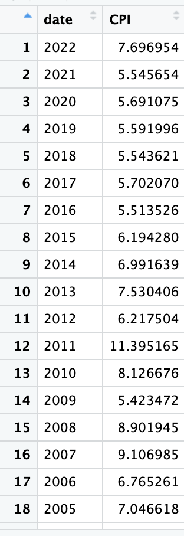
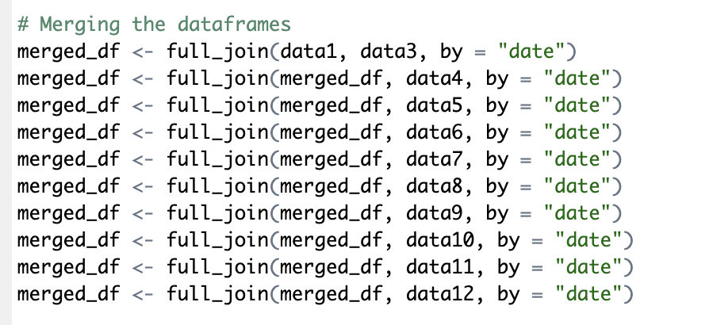
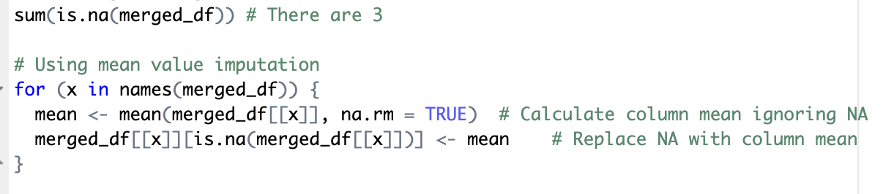
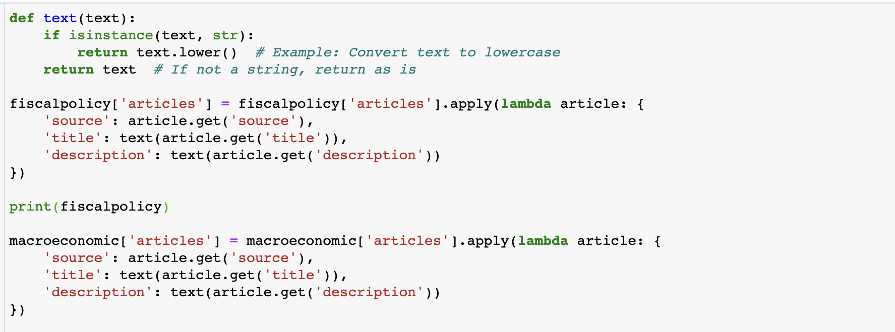
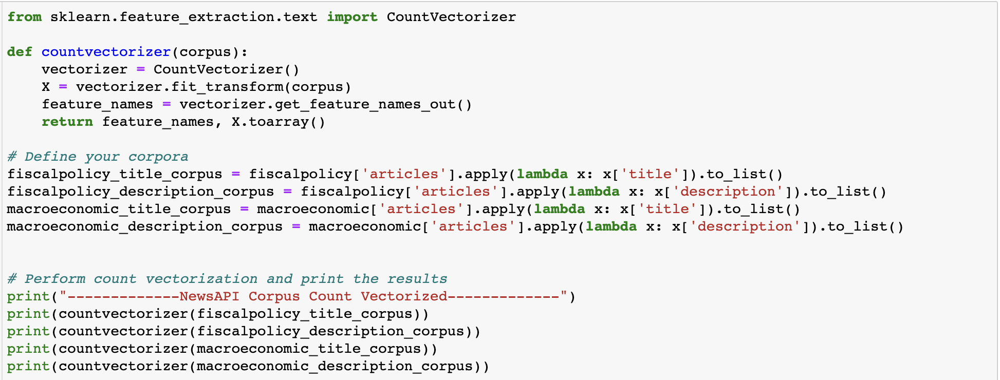
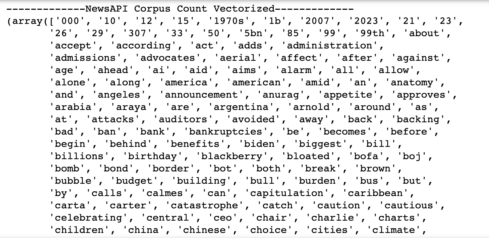

To access to code: Click
here.
To access the raw data: Click
here.
QUANTITATIVE DATA: wbstats API - R
Using the FREDAPI, the data has been extracted. The data that has been extracted from wbstats had certain missing values in them that was imputed by mean value imputation. Except missing value handing, not much was done except merging the dataset. The data pre-processing took quite some time wherein, different data points had to be merged through outer-join into a singular dataframe for 'Bangladesh'.
This is how the merging had been done.

The data is then merged to create a comparible dataset

The data is then seen for information and missing values

And then for data summary

To access to code: Click
here.
To access the raw data: Click
here.
TEXT DATA: NEWSAPI - Python
For NEWSAPI cleaning, the data was extracted and dumped in json format, which was again made changes to. For data cleaning, just to check if there are any lower cases, the followed dictionary was cleaned.

After the text's case has been lowered, we used the CountVectoriser, that takes a collection of texts to convert it into a numerical feature matrix. The following is the code.

The final vectorised data looks like this

To access to code: Click
here.
To access the raw data: Click
here.